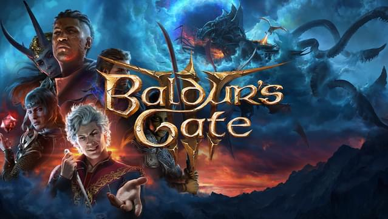

Counter-Strike 2
The ESports King is Back and better than ever

On September 27th, 2023, Valve officially released their long awaited sequel/remaster/remake of their
most popular game to date, Counter Strike: Global Offensive (CSGO). CSGO initially came out in
August of 2012 and was still popular and played professionally up until the servers were changed over to CS2. I think this
game is fun but it is hard sometimes.
Jack's Top 5 Favorite Games
Not in any particular order

- Grand Theft Auto 5
- Super Mario Galaxy 2
- Super Mario Galaxy
- Fallout 4
- Lego Star Wars: The Complete Saga
Most of these are my favorites because of just how much I have played them. Some of them aren't the most amazing games
in the world, but they all have a special place in my heart. Fun fact, GTA 5 the game that I have the most play
time in out of any other game (about 1000 hours). Lego Star Wars: The Complete Saga was probably my first
favorite game, just because the only thing going on in my life was Legos and Star Wars, which made that my favorite.
Some of the Hottest Games Right Now on Steam
Based on Steam's current players charts as of 2/13/2024

| Counter-Strike 2 |
Dota 2 |
Palworld |
Apex Legends |
| PUBG: BATTLEGROUNDS |
HELLDIVERS 2 |
Grand Theft Auto 5 |
Baldurs Gate 3 |
| Call of Duty |
Rust |
War Thunder |
Enshrouded |
These are the most played games right now on Steam.
Not a lot of surprises here, Baldurs Gate 3 won Game of the Year
at the 2023 Game Awards and is still on top. I'm surprised to see
Apex Legends on this list, I just replayed it for the first time the other
day since 2022. Not much has changed from what I played but still a good time.
Grand Theft Auto 5 is still going strong on the top charts despite coming out
in 2013. The hype around Grand Theft Auto 6 is real. As far as I know,
Rockstar Games is still on track for a 2025 release date. Palworld is the
Pokemon-like game but with guns. Not sure how they have evaded Nintendo's
legal team, but it's impressive. I haven't played the game myself but I
have heard that it is plagued with a lack of late-game content.